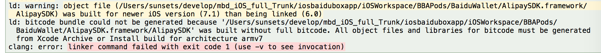
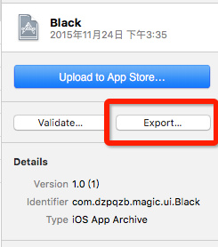
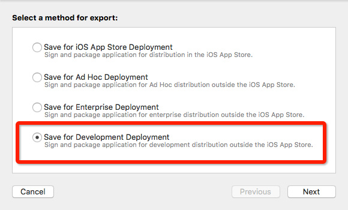
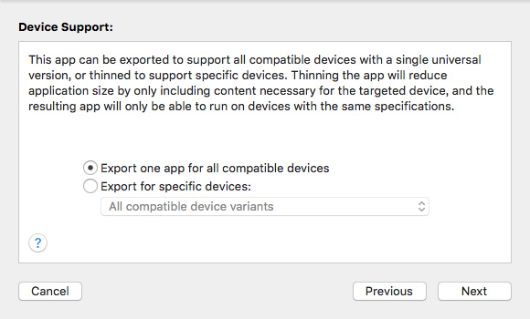
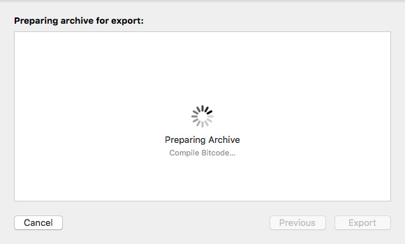
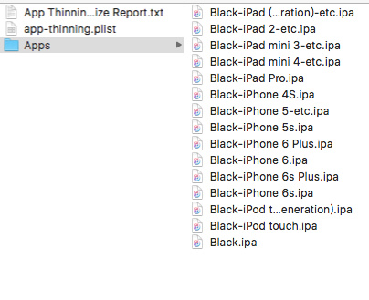

bitcode 设置
Sat 12 May 2018 by Little Captain打包相关设置
- Build Settings -> Enable Bitcode 设置为 Yes
- Build Settings -> Other C Flags 中添加
-fembed-bitcode - 这个设置不止要在app中设置，同样你也必须在编译库的时候使用。而且需要注意的是该参数, Xcode只在archive模式下添加
- xcodebuild archive 命令
- xcodebuild build 命令. 但是要加入一些特殊编译参数
xcodebuild BITCODE_GENERATION_MODE=bitcode OTHER_CFLAGS="-fembed-bitcode" -configuration "Release" -target "${TARGET_NAME}" -sdk iphoneos clean build
xcodebuild BITCODE_GENERATION_MODE=bitcode OTHER_CFLAGS="-fembed-bitcode" -configuration "Release" -arch "x86_64" -target "${TARGET_NAME}" -sdk iphonesimulator clean build
检测是否打开Bitcode
- 检查 bitcode 段
- .a (otool -arch armv7 -l xxxx.a | grep __bitcode | wc -l). 如果当前库支持.a文件则会输出一个数字
- app, framework (otool -l xxxx | grep __LLVM | wc -l). 当你的framework使用过lipo命令，进行拆解和合并之后，需要指定指令集进行检查才可以 (otool -arch armv7 -l xxxx | grep __LLVM | wc -l)
- 这些方法只供参考, 以最终检查结果为准
最终检查
- 如果您是一个APP，可以直接进行Archive打包，如果是一个库，则建议建一个Demo工程进行打包，记得要打开bitcode设置。
- 检查点1: 连接是否报错. 如果有任何一个库没有打开bitcode链接，将会出现类似下方的错误。只要链接过了，那么基本上OK了。

- 检查点2: 使用开发模式到处ipa.
 
选择出包方式(第二种)

Compiling Bitcode 
最终输出 ipa 包 
To Do
- 下一步要做什么: 深入研究 App 的大小的优化. 主要从以下两方面考虑
- 资源文件
- 二进制文件
What is app thinning? (iOS, tvOS, watchOS)
本文章是总结自 Xcode 帮助文档
概述
- App Store 和操作系统优化 iOS, tvOS, watchOS 下的应用程序安装包.
- 这种优化能让你的 App 使用几乎所有设备的特性, 并占用最小的磁盘空间.
- 优化主要有三方面: Slicing(iOS, tvOS), Bitcode, On-Demand Resources (iOS, tvOS)
Slicing(iOS, tvOS) 二进制切片
- Apple 的设备CPU架构不知一种, 一般有armv7、armv7s、arm64.
- 上传至 App Store 的安装包包含armv7(兼容armv7s)和arm64两种架构. 这种安装包就是通用的安装包
- Apple 会根据, 设备的具体 CPU 架构切片生成对应的安装包
- 通过这样的操作安装包会变为通用包的一般大小
- 注意: 切片操作从 9.0 …
git 储藏
what
- “‘储藏”“可以获取你工作目录的中间状态——也就是你修改过的被追踪的文件和暂存的变更——并将它保存到一个未完结变更的堆栈中，随时可以重新应用
where
- 当你在一个分支上工作到一半, 需要切换到另一个分支, 又不想做这种无意义的提交, 这就是储藏的使用场景
how
# 储藏
git stash
# 列出所有储藏
git stash list
# 应用最新储藏
git stash apply
# 同时应用储藏暂存在 index 中的信息
git stash apply --index
# 移除储藏
git stash drop
# 应用后, 移除
git stash pop
git 快速入门
Git vs SVN
系统的架构
SVN : 集中式

Git : 分布式

分布式架构的好处, 近乎所有的操作都是本地操作. 具体体现在: 1. 离线可以工作; 2. 操作速度快
对待数据的方式
SVN : 差异比较

Git : 文件快照

Git 中文件的三种状态
- 已提交(committed) : 数据已安全的保存在本地数据库中
- 已修改(modified) : 修改了文件, 还没保存在数据库中
- 已暂存(staged) : 对一个已修改的文件的当前版本做了标记, 使之包含在下次提交的快照中

Git 的基本环境搭建
安装 Git for Windows
使用管理员权限运行, 选择安装目录后, 一直下一步即可!!!
安装成功后, 以后每次都使用 Git Bash 这个程序即可. 打开后界面如下:

Git …
read moreBuilding C++ Applications
编译、链接、打包 可执行程序、静态库、动态库 构建、工具集
编译、链接、打包、可执行程序、静态库、动态库
- The three basic tools used to build C++ applications are the
compiler, thelinker, and thearchiver(or librarian). A collection of these programs and possibly other tools is called a toolset.- The
compilertakes C …
- The
conda 的基本使用
- 帮助
conda help COMMAND
- 常用命令
| Task | Command |
|---|---|
| Install a package | conda install $PACKAGE_NAME |
| Update a package | conda update --name $ENVIRONMENT_NAME $PACKAGE_NAME |
| Update package manager | conda update conda |
| Uninstall a package | conda remove --name $ENVIRONMENT_NAME $PACKAGE_NAME |
| Create an environment | conda create --name $ENVIRONMENT_NAME python |
| Activate an environment | source activate $ENVIRONMENT_NAME |
| Deactivate … |
pycharm 使用指南
使用快捷键
- 打开 Action 搜索框: Cmd+Shift+A
- 打开文件搜索框: Cmd+Shift+O
- 打开 Search Everywhere: Shift+Shift
- 进入全屏: Cmd+Ctrl+F
PyQt5 tutorial(The Tetris game)
Creating a computer game is a good way for enhancing programming skills.
The development
read moreWe do not have images for our Tetris game, we draw the tetrominoes using the drawing API available in the PyQt5 programming toolkit. Behind every computer game, there is a mathematical model. So it is in …
PyQt5 tutorial(Custom widgets)
Custom widgets are created by using the drawing tools provided by the toolkit. There are two basic possibilities: a programmer can modify or enhance an existing widget or he can create a custom widget from scratch.
Burning widget
read moreThis is a widget that we can see in Nero, K3B, or …
PyQt5 tutorial(Painting)
read morePyQt5 painting system is able to render vector graphics, images, and outline font-based text. Painting is needed in applications when we want to change or enhance an existing widget, or if we are creating a custom widget from scratch. To do the drawing, we use the painting API provided by …